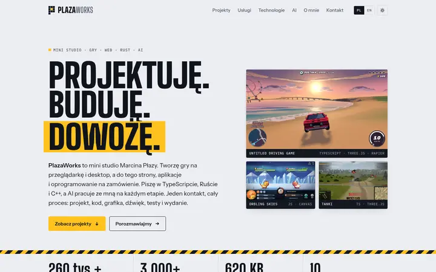
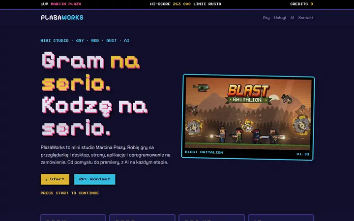
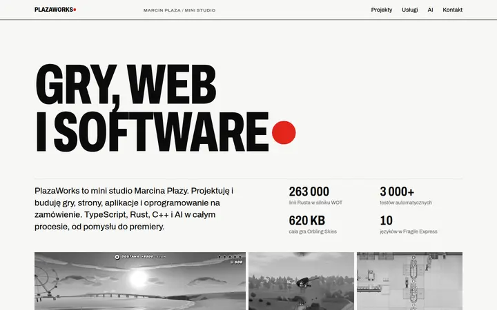
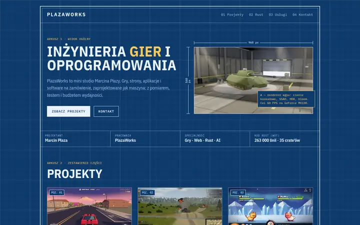
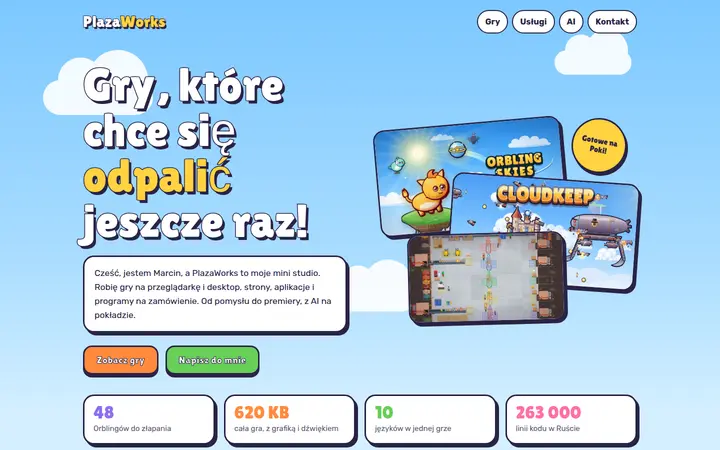

Ta sama treść i te same zrzuty z gier w pięciu różnych stylach. Kliknij makietę, żeby otworzyć pełną stronę. Każda działa też na telefonie.

Beton, tusz i żółty sygnał z oznaczeń posadzki. Profesjonalnie i technicznie, z odrobiną charakteru. Jasny i ciemny motyw, PL/EN.

Salon gier: piksele, neon, scanlines, „Wybierz grę” i „Continue?”. Od razu widać, że to studio gier.

Styl szwajcarski: jeden krój, siatka, czerwona kropka i projekty jako tabela. Najbardziej „agencyjnie”, dobre dla klientów spoza gier.

Rysunek inżynierski: niebieski papier, linie wymiarowe, tabliczka rysunkowa i schemat crate'ów. Podkreśla Rust i inżynierię.

Kreskówkowe niebo jak w Orbling Skies i Cloudkeep: grube kontury, naklejki, chmury. Najcieplejsze i najbardziej przyjazne.